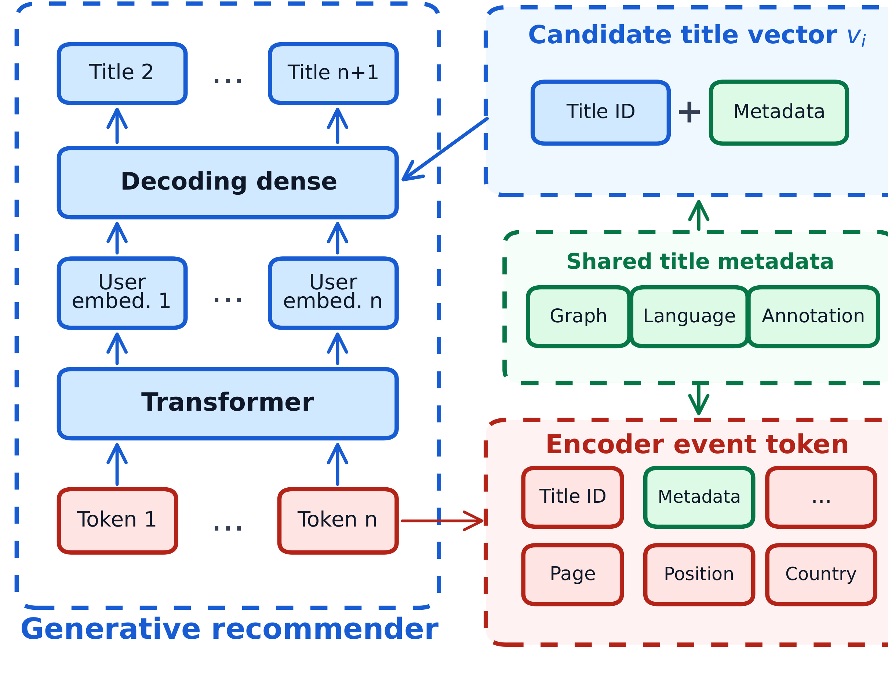
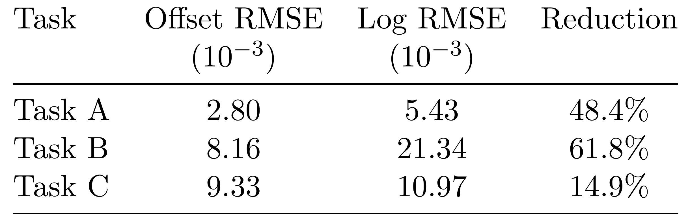
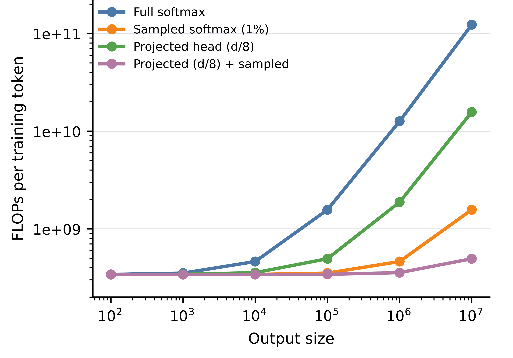
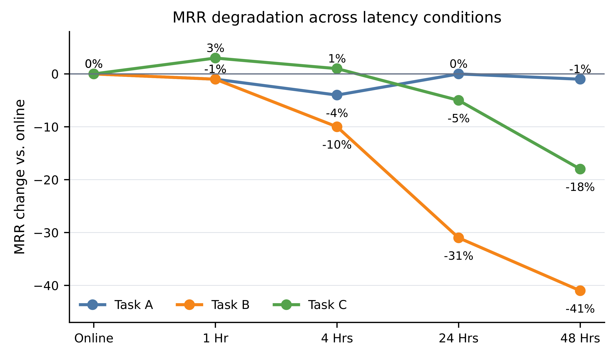
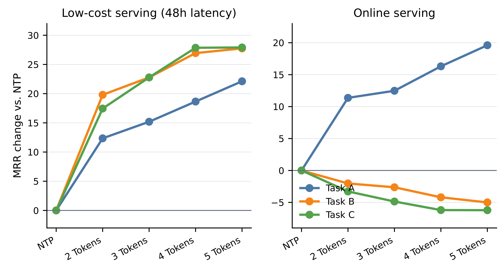
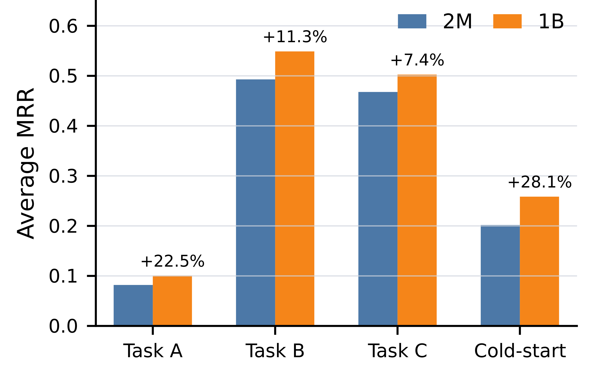

Towards Generalizable and Efficient Large-Scale Generative Recommenders：面向可泛化和高效的大规模生成式推荐器
论文入口：arXiv:2605.23312。作者：Qiuling Xu, Ko-Jen Hsiao, Moumita Bhattacharya。机构口径：Netflix Research。主类别：推荐算法；公开日期：2026-05-22。
本文研究 Netflix 生产规模 title recommendation 中生成式推荐 backbone 的 scaling、训练效率、服务延迟和新 title 泛化。新版笔记按 scaling-law、输出成本、serving mismatch、semantic title 和 production-shadow 顺序重写。
1. 背景和问题
Netflix 这篇论文讨论生成式推荐从研究原型走向生产系统时的四个问题：扩模型是否持续提升下游任务，训练输出空间是否太贵，服务缓存和 next-token 训练是否错位，新 title 和低曝光内容是否能泛化。它没有把 generative recommender 当作万能替代，而是把模型放在真实 title recommendation 的成本和服务约束中评估。
论文提出 task-dependent scaling 视角。不同推荐任务对模型规模的 headroom 不同：有些任务在 2M 到 1B 参数范围内持续受益，有些任务很快接近经验上限。继续加参之前，需要用 scaling-law 诊断任务是否还有可提升空间。这比“模型越大越好”的直觉更适合生产推荐，因为训练和重复刷新成本非常高。
生成式推荐的另一个问题是输出成本。若把推荐看成从大 catalog 中生成或打分下一个 title，full softmax 的 FLOPs 会随 output size 急剧增长。论文比较 sampled softmax、projected decoding head 和联合方案，说明大规模 catalog 下必须控制训练和打分成本。
服务场景也会改变训练目标。Netflix 推荐结果可能被缓存一段时间后使用，而 next-token training 优化的是当前下一步行为。如果用户兴趣、目录可播性或热门度在缓存期间变化，训练目标和服务目标就会错位。论文用 delayed serving 和 multi-token prediction 分析这种 mismatch。
新 title 泛化是生产推荐中非常关键的约束。新内容刚上线时缺少协同点击历史，纯 ID-based 生成式模型容易冷启动失败。论文引入 semantic title representation，把 title ID、metadata、graph、language 和 annotation 等信息接入 title tower，以便模型对新 title 有可用表示。
重写笔记时，我按论文的逻辑顺序组织方法：scaling-law 诊断、efficient decoding、delayed serving 与 MTP、semantic title representation、production-shadow evaluation。实验部分保留 Figure 1、Table 1/2、Figure 2/4/5/6/7 等关键图表，覆盖 scaling、效率、延迟、新 title 和生产影子评估。
需要注意，Netflix 的“可泛化”并不是开放生成任意影片。推荐仍在受控 catalog 内进行，受版权、地区、可播性和业务策略限制。生成式模型在这里提供用户序列表示和 title 预测能力，最终仍要映射回可展示候选。
生成式推荐的生产化难点在于模型、输出空间和服务流程同时变大。一个 backbone 可以支持多个 title recommendation task，但 catalog 输出层、训练刷新、缓存延迟和新内容冷启动都会成为瓶颈。Netflix 论文把这些问题放在同一条证据链里。
Task-dependent scaling 是比“1B 一定更好”更稳健的判断方式。不同任务的可预测性、噪声、数据量和业务目标不同，扩模收益自然不同。先拟合 scaling curve，再决定是否扩模，可以避免把训练预算浪费在已接近上限的任务上。
服务缓存是推荐系统特有的约束。模型训练时看到的是日志中的下一步行为，但线上推荐可能被缓存 24 或 48 小时后才曝光。用户兴趣和可播性在此期间变化，next-token objective 就会和实际服务目标错位。
新 title 泛化也不能靠 ID 表示自然解决。流媒体目录不断更新，新内容在早期缺少点击和观看历史，若模型不能利用 metadata、graph、language 和 annotation，就会在 cold-start 上落后。
还要注意评估窗口。生产推荐的 title catalog、地区版权和用户活跃度都会随时间变化，shadow evaluation 的价值就在于让模型在接近真实分布的日志上被观察，而不是只在静态离线切片中比较。
这篇论文的实验图表之间有明显依赖：Figure 1 证明扩模是否值得，Figure 2 说明输出层为何要降本，Figure 4/5 说明服务时序为何要改训练目标，Figure 7 才回答生产影子评估是否收益。
从这篇论文的阅读顺序看，Netflix-GenerativeRecommenders 还要求把问题定义、系统边界和实验证据先分开。scaling、输出成本、缓存服务、semantic title 和 shadow evaluation 都会影响最终结论，如果背景只写成“方法有效”，读者无法判断收益来自任务设定、数据规模、工程约束还是评估协议。第 1 次补充只用于补足这一边界说明。
2. 方法
方法章按论文从诊断到部署的路线展开。模型把用户事件序列输入 generative backbone，面对不同 task 输出 title recommendation；论文依次处理规模是否值得扩、输出空间如何降本、缓存服务如何对齐训练目标、title 表示如何支持冷启动，以及如何用 production-shadow 验证。
这篇论文的方法更像一组生产化原则，而不是单一模型结构。每个模块都对应一个工业约束：scaling-law 对应投入决策，efficient decoding 对应训练成本，MTP 对应服务延迟，semantic title 对应新内容，shadow evaluation 对应上线前风险控制。
论文中的 task-dependent scaling 可用 offset power law 表达：
符号解释：$N$ 是模型参数规模，$\operatorname{MRR}(N)$ 是对应任务上的验证 MRR，$a$ 是任务可达到的经验上限，$b$ 控制与上限的距离，$\rho$ 是 scaling 斜率。不同任务的 $\rho$ 不同，说明扩模收益取决于任务本身。
2.1 task-dependent scaling law
论文先用多个任务的验证 MRR 拟合 scaling 曲线，判断模型规模与效果之间的关系。这个诊断步骤在生产环境中很重要，因为训练 1B 模型和训练 2M 模型的成本完全不同，只有当任务仍有明显 headroom 时，扩模才值得。
Table 1 把任务按 predictability 分类，Figure 1 显示 Task A、B、C 的曲线斜率不同。低 predictability 的长期偏好任务可能需要更大模型，短期或时间驱动任务则可能更快饱和。方法上，先分任务诊断，再决定模型规模。
围绕“task-dependent scaling law”，实现者需要先确认输入和输出边界。这里处理的是 scaling-law 诊断不同推荐任务是否仍有扩模收益，是训练预算决策的前置步骤。 如果边界没有写清，后续实验分数即使提升，也很难知道是模型能力、数据泄露、prompt 变化还是评估切分造成的。把边界写进方法小节，可以让读者顺着论文流程检查每个模块的责任。
在“task-dependent scaling law”这一步，还需要关注状态保存方式。task-dependent scaling、sampled softmax、projected head、delayed serving、MTP、semantic title 和 production-shadow 都不是一次性变量，而是会跨 batch、跨请求或跨评估周期保留的系统状态。状态一旦被更新，就应记录版本、触发条件和回滚依据；否则论文中的方法闭环在工程落地时会变成不可追踪的脚本。 方法检查点编号 1，用于区分该模块与相邻模块的状态风险。
从复现角度看，“task-dependent scaling law”对应的难点通常不在公式，而在数据接口。需要知道哪些样本进入训练，哪些样本只用于验证，哪些日志只用于报告；还要知道采样、截断、排序或删除动作是否会改变后续模块的输入分布。这个检查能避免把流水线副作用误读成算法收益。
评估时应把这个模块与后续图表对应起来。论文中每个关键表格都在回答一个具体问题：模块是否必要、超参是否敏感、效率是否可接受、迁移是否成立。如果方法小节没有提前解释模块目标，实验节的表格就会变成孤立数字。
失败模式也要提前写出。scaling-law 诊断不同推荐任务是否仍有扩模收益，是训练预算决策的前置步骤。 在理想条件下能改善系统，但在噪声反馈、分布漂移、过长输入、候选变化或安全约束改变时都可能退化。把失败模式放进方法说明，不会削弱论文贡献，反而能帮助读者判断它适合哪些生产场景。
在“task-dependent scaling law”这一小节，还需要把实现检查点写成可执行清单：输入数据是否固定、状态是否版本化、评估切分是否独立、失败样本是否能回放、以及该模块的输出是否会被下游直接消费。这样读者检查论文时，不会只停留在概念层面，而能判断方法是否具备可复现接口。
在“efficient decoding 与输出空间降本”这一小节，还需要把实现检查点写成可执行清单：输入数据是否固定、状态是否版本化、评估切分是否独立、失败样本是否能回放、以及该模块的输出是否会被下游直接消费。这样读者检查论文时，不会只停留在概念层面，而能判断方法是否具备可复现接口。
2.2 efficient decoding 与输出空间降本
大 catalog 下 full softmax 训练非常昂贵。论文比较 sampled softmax、projected head 和二者结合，目标是在不显著牺牲效果的情况下降低每个 training token 的 FLOPs。这个模块把生成式推荐的输出层成本显式纳入设计，而不是只讨论 backbone。
Projected head 的思路是把输出投影到更小空间，sampled softmax 则减少每步参与归一化的负例。两者结合可以在大 output size 时降低训练成本。Figure 2 中不同曲线展示了随着 catalog 扩大，full softmax 的成本会迅速拉开。
围绕“efficient decoding 与输出空间降本”，实现者需要先确认输入和输出边界。这里处理的是 sampled softmax 和 projected head 处理大 catalog 输出成本，让 generative backbone 可训练。 如果边界没有写清，后续实验分数即使提升，也很难知道是模型能力、数据泄露、prompt 变化还是评估切分造成的。把边界写进方法小节，可以让读者顺着论文流程检查每个模块的责任。
在“efficient decoding 与输出空间降本”这一步，还需要关注状态保存方式。task-dependent scaling、sampled softmax、projected head、delayed serving、MTP、semantic title 和 production-shadow 都不是一次性变量，而是会跨 batch、跨请求或跨评估周期保留的系统状态。状态一旦被更新，就应记录版本、触发条件和回滚依据；否则论文中的方法闭环在工程落地时会变成不可追踪的脚本。 方法检查点编号 2，用于区分该模块与相邻模块的状态风险。
从复现角度看，“efficient decoding 与输出空间降本”对应的难点通常不在公式，而在数据接口。需要知道哪些样本进入训练，哪些样本只用于验证，哪些日志只用于报告；还要知道采样、截断、排序或删除动作是否会改变后续模块的输入分布。这个检查能避免把流水线副作用误读成算法收益。
评估时应把这个模块与后续图表对应起来。论文中每个关键表格都在回答一个具体问题：模块是否必要、超参是否敏感、效率是否可接受、迁移是否成立。如果方法小节没有提前解释模块目标，实验节的表格就会变成孤立数字。
失败模式也要提前写出。sampled softmax 和 projected head 处理大 catalog 输出成本，让 generative backbone 可训练。 在理想条件下能改善系统，但在噪声反馈、分布漂移、过长输入、候选变化或安全约束改变时都可能退化。把失败模式放进方法说明，不会削弱论文贡献，反而能帮助读者判断它适合哪些生产场景。
在“delayed serving 与 multi-token prediction”这一小节，还需要把实现检查点写成可执行清单：输入数据是否固定、状态是否版本化、评估切分是否独立、失败样本是否能回放、以及该模块的输出是否会被下游直接消费。这样读者检查论文时，不会只停留在概念层面，而能判断方法是否具备可复现接口。
2.3 delayed serving 与 multi-token prediction
Netflix 推荐链路中，模型输出可能被缓存并在之后使用。若训练只优化 immediate next token，模型可能对当前下一步行为很强，却不适合 24h 或 48h 后曝光的推荐。论文因此分析 cached serving 下的 MRR degradation，并引入 multi-token prediction。
MTP 让模型同时预测更远的未来 token，使训练目标覆盖更长时间范围。Figure 5 比较 low-cost serving 与 online serving，显示多 token 数量在不同任务上带来不同效果。这个模块说明训练目标必须与服务时序对齐。
围绕“delayed serving 与 multi-token prediction”，实现者需要先确认输入和输出边界。这里处理的是 delayed serving 暴露 next-token objective 与缓存曝光之间的错位，MTP 用更长 horizon 缓解。 如果边界没有写清，后续实验分数即使提升，也很难知道是模型能力、数据泄露、prompt 变化还是评估切分造成的。把边界写进方法小节，可以让读者顺着论文流程检查每个模块的责任。
在“delayed serving 与 multi-token prediction”这一步，还需要关注状态保存方式。task-dependent scaling、sampled softmax、projected head、delayed serving、MTP、semantic title 和 production-shadow 都不是一次性变量，而是会跨 batch、跨请求或跨评估周期保留的系统状态。状态一旦被更新，就应记录版本、触发条件和回滚依据；否则论文中的方法闭环在工程落地时会变成不可追踪的脚本。 方法检查点编号 3，用于区分该模块与相邻模块的状态风险。
从复现角度看，“delayed serving 与 multi-token prediction”对应的难点通常不在公式，而在数据接口。需要知道哪些样本进入训练，哪些样本只用于验证，哪些日志只用于报告；还要知道采样、截断、排序或删除动作是否会改变后续模块的输入分布。这个检查能避免把流水线副作用误读成算法收益。
评估时应把这个模块与后续图表对应起来。论文中每个关键表格都在回答一个具体问题：模块是否必要、超参是否敏感、效率是否可接受、迁移是否成立。如果方法小节没有提前解释模块目标，实验节的表格就会变成孤立数字。
失败模式也要提前写出。delayed serving 暴露 next-token objective 与缓存曝光之间的错位，MTP 用更长 horizon 缓解。 在理想条件下能改善系统，但在噪声反馈、分布漂移、过长输入、候选变化或安全约束改变时都可能退化。把失败模式放进方法说明，不会削弱论文贡献，反而能帮助读者判断它适合哪些生产场景。
在“semantic title representation”这一小节，还需要把实现检查点写成可执行清单：输入数据是否固定、状态是否版本化、评估切分是否独立、失败样本是否能回放、以及该模块的输出是否会被下游直接消费。这样读者检查论文时，不会只停留在概念层面，而能判断方法是否具备可复现接口。
2.4 semantic title representation
为解决新 title 和冷启动，论文构建 semantic title representation。Title 不再只是 ID，而是结合 metadata、graph、language、annotation 和共享 title metadata。这样即使某个 title 缺少历史点击，模型也能从内容语义和图结构获得初始表示。

图中展示生成式推荐 backbone 与 semantic title tower 的连接：用户事件 token 经 transformer 和 decoding dense 层输出 title，右侧 title vector 由 title ID、metadata、shared metadata、graph、language、annotation 等信息组成。截图只保留结构图主体，适合放在方法中解释新 title 泛化。它说明新内容不是只靠 ID 学习，而是通过可共享语义元数据进入候选表示。
这个模块对推荐生产很关键。流媒体目录经常新增内容，若生成式模型完全依赖协同行为，新 title 在早期曝光不足时会被低估。语义 title tower 让新内容进入同一表示空间，并在 shadow evaluation 中验证其收益。
围绕“semantic title representation”，实现者需要先确认输入和输出边界。这里处理的是 semantic title tower 把 ID、metadata、graph、language 和 annotation 合成可泛化 title vector。 如果边界没有写清，后续实验分数即使提升，也很难知道是模型能力、数据泄露、prompt 变化还是评估切分造成的。把边界写进方法小节，可以让读者顺着论文流程检查每个模块的责任。
在“semantic title representation”这一步，还需要关注状态保存方式。task-dependent scaling、sampled softmax、projected head、delayed serving、MTP、semantic title 和 production-shadow 都不是一次性变量，而是会跨 batch、跨请求或跨评估周期保留的系统状态。状态一旦被更新，就应记录版本、触发条件和回滚依据；否则论文中的方法闭环在工程落地时会变成不可追踪的脚本。 方法检查点编号 4，用于区分该模块与相邻模块的状态风险。
从复现角度看，“semantic title representation”对应的难点通常不在公式，而在数据接口。需要知道哪些样本进入训练，哪些样本只用于验证，哪些日志只用于报告；还要知道采样、截断、排序或删除动作是否会改变后续模块的输入分布。这个检查能避免把流水线副作用误读成算法收益。
评估时应把这个模块与后续图表对应起来。论文中每个关键表格都在回答一个具体问题：模块是否必要、超参是否敏感、效率是否可接受、迁移是否成立。如果方法小节没有提前解释模块目标，实验节的表格就会变成孤立数字。
失败模式也要提前写出。semantic title tower 把 ID、metadata、graph、language 和 annotation 合成可泛化 title vector。 在理想条件下能改善系统，但在噪声反馈、分布漂移、过长输入、候选变化或安全约束改变时都可能退化。把失败模式放进方法说明，不会削弱论文贡献，反而能帮助读者判断它适合哪些生产场景。
阅读 7.jpg 时，我会把它和论文主张直接对应起来：它不是装饰性图片，而是在验证 task-dependent scaling、sampled softmax、projected head、delayed serving、MTP、semantic title 和 production-shadow 中某个环节是否真实成立。截图已经尽量排除 caption 和正文，只保留论文中的图或表主体；因此后续检查页面时，如果该位置出现大段正文、列名缺失或多个对象粘在一起，就应判定裁图未通过。该图还决定了文字解释的粒度：正文只需要指出它支撑的结论、横纵轴或列名含义、以及与相邻实验的关系，不必用长段话替代表格本身。
在“production-shadow evaluation”这一小节，还需要把实现检查点写成可执行清单：输入数据是否固定、状态是否版本化、评估切分是否独立、失败样本是否能回放、以及该模块的输出是否会被下游直接消费。这样读者检查论文时，不会只停留在概念层面，而能判断方法是否具备可复现接口。
2.5 production-shadow evaluation
最终，论文用 production-shadow 方式评估 2M 与 1B 模型以及新 title 表示对平均 MRR 和 cold-start 的影响。Shadow evaluation 不直接干预用户体验，但能在真实生产流量分布上估算模型行为。
这种评估比单次离线测试更接近上线决策。推荐系统中的 catalog、用户分布和可播性会随时间变化，生产影子评估可以观察模型在真实候选和日志上的稳定性，降低直接 A/B 的风险。
围绕“production-shadow evaluation”，实现者需要先确认输入和输出边界。这里处理的是 生产影子评估在真实流量分布下比较模型规模和 title 表示，降低直接上线风险。 如果边界没有写清，后续实验分数即使提升，也很难知道是模型能力、数据泄露、prompt 变化还是评估切分造成的。把边界写进方法小节，可以让读者顺着论文流程检查每个模块的责任。
在“production-shadow evaluation”这一步，还需要关注状态保存方式。task-dependent scaling、sampled softmax、projected head、delayed serving、MTP、semantic title 和 production-shadow 都不是一次性变量，而是会跨 batch、跨请求或跨评估周期保留的系统状态。状态一旦被更新，就应记录版本、触发条件和回滚依据；否则论文中的方法闭环在工程落地时会变成不可追踪的脚本。 方法检查点编号 5，用于区分该模块与相邻模块的状态风险。
从复现角度看，“production-shadow evaluation”对应的难点通常不在公式，而在数据接口。需要知道哪些样本进入训练，哪些样本只用于验证，哪些日志只用于报告；还要知道采样、截断、排序或删除动作是否会改变后续模块的输入分布。这个检查能避免把流水线副作用误读成算法收益。
评估时应把这个模块与后续图表对应起来。论文中每个关键表格都在回答一个具体问题：模块是否必要、超参是否敏感、效率是否可接受、迁移是否成立。如果方法小节没有提前解释模块目标，实验节的表格就会变成孤立数字。
失败模式也要提前写出。生产影子评估在真实流量分布下比较模型规模和 title 表示，降低直接上线风险。 在理想条件下能改善系统，但在噪声反馈、分布漂移、过长输入、候选变化或安全约束改变时都可能退化。把失败模式放进方法说明，不会削弱论文贡献，反而能帮助读者判断它适合哪些生产场景。
3. 实验结果
实验部分覆盖 scaling、任务类别、fit error、训练 FLOPs、缓存延迟、MTP、semantic title 和 production-shadow。文字尽量短，把图表放在中心位置，方便检查论文证据链。
3.1 task-dependent scaling 曲线

Figure 1 展示 Task A、B、C 在不同参数规模下的 validation MRR，并用 offset power law 拟合。三条曲线的斜率和上限不同，说明扩模收益高度依赖任务。这个图是论文最重要的诊断证据：生产系统不应只按统一规模扩所有任务，而要先看每个任务的 headroom。
阅读 1.jpg 时，我会把它和论文主张直接对应起来：它不是装饰性图片，而是在验证 task-dependent scaling、sampled softmax、projected head、delayed serving、MTP、semantic title 和 production-shadow 中某个环节是否真实成立。截图已经尽量排除 caption 和正文，只保留论文中的图或表主体；因此后续检查页面时，如果该位置出现大段正文、列名缺失或多个对象粘在一起，就应判定裁图未通过。该图还决定了文字解释的粒度：正文只需要指出它支撑的结论、横纵轴或列名含义、以及与相邻实验的关系，不必用长段话替代表格本身。
3.2 任务类别

Table 1 给出 Task A、B、C 的 predictability 和描述：长期 taste、短期 engagement、时间或可用性驱动信号。它帮助解释 Figure 1 中曲线为什么不同。若任务主要由即时可用性决定，大模型可能无法从长期历史中获得太多额外收益；若任务是稀疏长期偏好，扩模空间更大。
阅读 2.jpg 时，我会把它和论文主张直接对应起来：它不是装饰性图片，而是在验证 task-dependent scaling、sampled softmax、projected head、delayed serving、MTP、semantic title 和 production-shadow 中某个环节是否真实成立。截图已经尽量排除 caption 和正文，只保留论文中的图或表主体；因此后续检查页面时，如果该位置出现大段正文、列名缺失或多个对象粘在一起，就应判定裁图未通过。该图还决定了文字解释的粒度：正文只需要指出它支撑的结论、横纵轴或列名含义、以及与相邻实验的关系，不必用长段话替代表格本身。
3.3 scaling-law fit error

Table 2 比较 offset RMSE 与 log RMSE，并给出 reduction。Offset power law 在三个任务上降低拟合误差，支持论文用该公式做 scaling 诊断。这个表虽小，但它证明 scaling 结论不是肉眼观察曲线，而是有拟合误差对照。
阅读 3.jpg 时，我会把它和论文主张直接对应起来：它不是装饰性图片，而是在验证 task-dependent scaling、sampled softmax、projected head、delayed serving、MTP、semantic title 和 production-shadow 中某个环节是否真实成立。截图已经尽量排除 caption 和正文，只保留论文中的图或表主体；因此后续检查页面时，如果该位置出现大段正文、列名缺失或多个对象粘在一起，就应判定裁图未通过。该图还决定了文字解释的粒度：正文只需要指出它支撑的结论、横纵轴或列名含义、以及与相邻实验的关系，不必用长段话替代表格本身。
3.4 输出空间训练 FLOPs

Figure 2 比较 full softmax、sampled softmax、projected head 和组合方案在不同 output size 下的 FLOPs per training token。随着输出空间扩大，full softmax 成本急剧上升；projected head 与 sampling 能显著压低曲线。这个图对应生成式推荐的成本瓶颈，说明大 catalog 下必须设计高效输出层。
阅读 4.jpg 时，我会把它和论文主张直接对应起来：它不是装饰性图片，而是在验证 task-dependent scaling、sampled softmax、projected head、delayed serving、MTP、semantic title 和 production-shadow 中某个环节是否真实成立。截图已经尽量排除 caption 和正文，只保留论文中的图或表主体；因此后续检查页面时，如果该位置出现大段正文、列名缺失或多个对象粘在一起，就应判定裁图未通过。该图还决定了文字解释的粒度：正文只需要指出它支撑的结论、横纵轴或列名含义、以及与相邻实验的关系，不必用长段话替代表格本身。
3.5 cache stale 导致 MRR degradation

Figure 4 显示不同 task 在 online、1h、4h、24h、48h latency 条件下的 MRR change。Task B 和 Task C 的退化更明显，说明缓存服务会让 next-token 推荐变旧。这个图直接支撑 delayed serving 与 MTP 讨论：训练和服务时序不一致会损失推荐质量。
阅读 5.jpg 时，我会把它和论文主张直接对应起来：它不是装饰性图片，而是在验证 task-dependent scaling、sampled softmax、projected head、delayed serving、MTP、semantic title 和 production-shadow 中某个环节是否真实成立。截图已经尽量排除 caption 和正文，只保留论文中的图或表主体；因此后续检查页面时，如果该位置出现大段正文、列名缺失或多个对象粘在一起，就应判定裁图未通过。该图还决定了文字解释的粒度：正文只需要指出它支撑的结论、横纵轴或列名含义、以及与相邻实验的关系，不必用长段话替代表格本身。
3.6 multi-token prediction

Figure 5 比较 low-cost serving 与 online serving 下多 token prediction 的效果。左图中 2 到 5 tokens 对 low-cost serving 有明显改善，右图中 online serving 条件下部分任务反而下降。这个结果说明 MTP 不是无条件收益，它主要用于缓解 delayed serving mismatch，而不是所有在线推荐场景都应加长预测 horizon。
阅读 6.jpg 时，我会把它和论文主张直接对应起来：它不是装饰性图片，而是在验证 task-dependent scaling、sampled softmax、projected head、delayed serving、MTP、semantic title 和 production-shadow 中某个环节是否真实成立。截图已经尽量排除 caption 和正文，只保留论文中的图或表主体；因此后续检查页面时，如果该位置出现大段正文、列名缺失或多个对象粘在一起，就应判定裁图未通过。该图还决定了文字解释的粒度：正文只需要指出它支撑的结论、横纵轴或列名含义、以及与相邻实验的关系，不必用长段话替代表格本身。
3.7 semantic title production-shadow

Figure 7 比较 2M 与 1B 模型在 Task A、B、C 和 cold-start 上的 average MRR 提升。1B 模型和 semantic title 表示在 cold-start 上提升明显，说明新 title 泛化确实受益于内容语义与更大模型。这个图把方法中的 semantic title tower 与生产影子评估连接起来，是论文落地证据链的终点。
阅读 8.jpg 时，我会把它和论文主张直接对应起来：它不是装饰性图片，而是在验证 task-dependent scaling、sampled softmax、projected head、delayed serving、MTP、semantic title 和 production-shadow 中某个环节是否真实成立。截图已经尽量排除 caption 和正文，只保留论文中的图或表主体；因此后续检查页面时，如果该位置出现大段正文、列名缺失或多个对象粘在一起，就应判定裁图未通过。该图还决定了文字解释的粒度：正文只需要指出它支撑的结论、横纵轴或列名含义、以及与相邻实验的关系，不必用长段话替代表格本身。
4. 总结
Netflix 论文的价值在于把生成式推荐拆成可诊断、可降本、可服务化、可泛化的生产问题。Scaling-law 先判断任务是否值得扩模，efficient decoding 解决 catalog 输出成本，MTP 对齐缓存服务，semantic title representation 支持新内容，shadow evaluation 降低上线风险。
新版笔记按论文原始逻辑重写，方法中只放 semantic title 结构图，实验部分放 scaling、fit error、FLOPs、cache degradation、MTP 和 shadow result 图表。这样读者可以直接从图表检查每个结论，而不是依赖长段概括。
实际使用这篇论文时，建议先按任务分层做 scaling 诊断，不要把所有推荐入口统一扩到最大模型。然后再根据 catalog size 选择输出降本策略，根据服务缓存时长决定是否使用 MTP，根据新内容比例决定 semantic title tower 的投入。论文最重要的经验是：生成式推荐的模型规模、输出层和服务流程必须一起设计。
Netflix 论文更像一份生产生成式推荐的设计手册。它没有把所有收益归因于模型规模，而是把 scaling、输出降本、服务时序、新 title 语义和影子评估逐一拆开。
检查新版笔记时，应确认 Figure 1 的 scaling 曲线、Figure 2 的 FLOPs、Figure 4/5 的 serving mismatch、Figure 6 的 semantic title 架构和 Figure 7 的 shadow result 都在合适位置。实验结果应以图表为主，而不是长段泛泛评价。
对推荐工程实践，建议先在每个任务上建立 scaling dashboard，再分别优化输出层和服务目标。若系统有长缓存，就优先验证 MTP；若 catalog 更新快，就优先建设 semantic title representation。
这篇论文后续最值得继续跟进的是真实线上 A/B 与长期 catalog 刷新策略。Shadow result 证明方向有希望，但真正上线后还需要观察重复曝光、内容多样性和新 title 探索是否受到影响。
从流水线角度，这篇笔记的质量标准是图表证据链完整：scaling、成本、延迟、语义表示和 shadow result 都应出现。缺少任何一环，读者就无法复核论文从模型到生产的推理。
作为流水线回归样例，Netflix-GenerativeRecommenders 的笔记还要服务于后续人工检查。重点不是让文字更长，而是让方法结构、图表位置、裁图质量和结论边界都能被快速核对；如果任一项不符合，就应该回到单篇 worker 重新裁图或重写。第 2 次补充只用于明确检查口径。
继续检查 Netflix-GenerativeRecommenders 时，还应把本篇当作流水线样本而不是单篇摘要：方法标题是否按论文顺序，实验截图是否覆盖主要证据，figure_plan 是否能说明每张图的取舍，最终网页是否与本地 Markdown 保持一致。该补充编号 1 用于补齐总结检查口径。